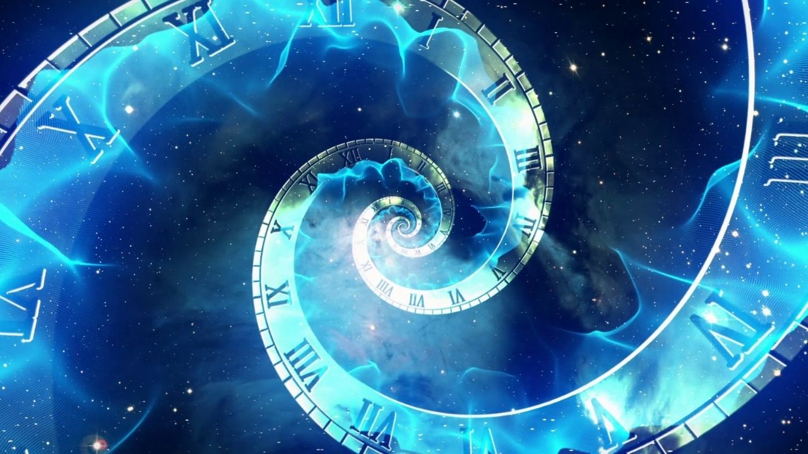

Cristales
¿Que son los cristales?
En física, un cristal se define como un objeto cuyos átomos están ordenados de tal manera que crean un patrón que se repite. En un líquido, por ejemplo, las moléculas se distribuyen de manera simétrica, como un enjambre uniforme. En un cristal, en cambio, las moléculas se agrupan formando redes y estructuras que van creando una secuencia. Por eso, Wilczek dice que "los cristales son las sustancias más organizadas de la naturaleza".Si miras bajo un microscopio, podrás ver, por ejemplo, las estructuras de los cristales de sal o de la nieve. Memoria cuántica: el experimento científico que logró atrapar y transportar partículas de luz (y por qué es importante para el futuro de la tecnología) Entonces, si ya sabemos que un cristal está formado por patrones que se repiten en el espacio, surge la pregunta con la que el asunto se vuelve más interesante: ¿es posible crear un cristal cuyos patrones no se repitan cada cierta distancia, sino cada cierto tiempo?
Cristales del tiempo

Los cristaled temporales , un nuevo concepto propuesto en 2012, son un estado de la materia cuyos patrones se repiten en el tiempo en vez de en el espacio .Estos sistemas muestran una ruptura espiontanea de la simetria bajo traslaciones temporales . En 2017 se descubrieron los primeros matereriales nuevos que se ajustan completamente a la nocion de crital temporal .Esos materiales y otros encontados desde entonces ofreecen la posibilidad de crear relojes aún mas precisos que los actuales.
Para que nos sirve

Los cristales del tiempo son un área de estudio que está en sus inicios, pero desde ya permiten soñar con imresionantes usos en la ciencia y la tecnología.Este estado de la materia permite especular, por ejemplo, con la posibilidad de que en un futuro existan máquinas de movimiento perpetuo. Wilczek también menciona que los cristales de tiempo podrían servir para fabricar relojes mucho más precisos y estables que los poderosos relojes atómicos que ya existen. "Serían capaces de realizar medidas exquisitas de la distancia y el tiempo", escribió el físico en Scientific American. También se refiere a la posibilidad de desarrollar GPS mejorados, nuevos métodos para descubrir depósitos mineralesmediante la interacción con la gravedad, o la detección de ondas gravitacionales. Finalmente, Wilczek comenta que descubrir nuevas formas en las que se puede organizar la materia puede llevarnos a entender mejor los agujeros negros y el espacio-tiempo en el cosmos. Todo eso aún pertenece al terreno de la especulación, pero quizás algún día llegue el momento en que un cristal de tiempo sea más útil y valioso que el más fino de los diamantes.